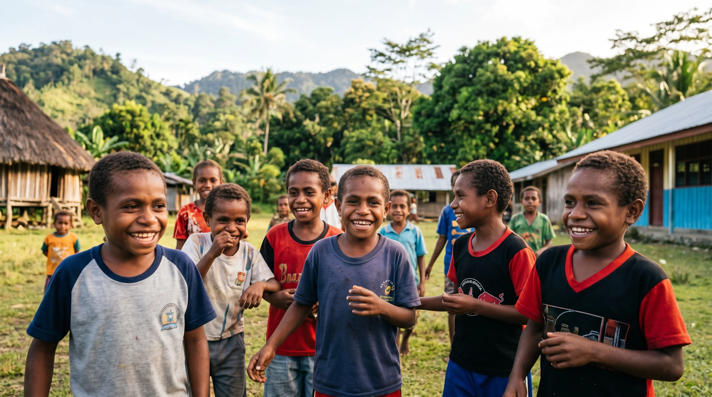
Aksi Dari Timur Indonesia
Langkah kecil untuk hidup yang lebih layak
Berkomitmen menghadirkan akses dasar air bersih, sanitasi yang layak, intervensi gizi terpadu, dan perlindungan inklusif bagi saudara kita di wilayah 3T.
4 Pilar Program Utama
Inisiatif kami berfokus pada pendekatan holistik untuk menyelesaikan akar permasalahan di daerah sasaran melalui aksi nyata.
Air Bersih
Membangun instalasi air bersih dan menerapkan teknologi filtrasi sederhana berbasis masyarakat untuk memastikan akses air minum yang aman dan berkelanjutan.
Sanitasi Kemanusiaan
Pengadaan fasilitas MCK yang layak serta edukasi masif terkait Perilaku Hidup Bersih dan Sehat (PHBS) untuk menekan angka penyakit menular.
Gizi & Tumbuh Kembang
Pemberian intervensi gizi terpadu, pemantauan kesehatan ibu dan anak, serta program konkret pencegahan stunting secara komprehensif.
Inklusi Disabilitas
Mendorong pemberdayaan ekonomi, penyediaan alat bantu aksesibilitas, serta advokasi hak-hak dasar bagi penyandang disabilitas di daerah terpencil.
Wilayah Intervensi Fokus
Mendedikasikan sumber daya pada titik-titik krusial di Indonesia Timur yang sangat membutuhkan akselerasi pembangunan dasar.
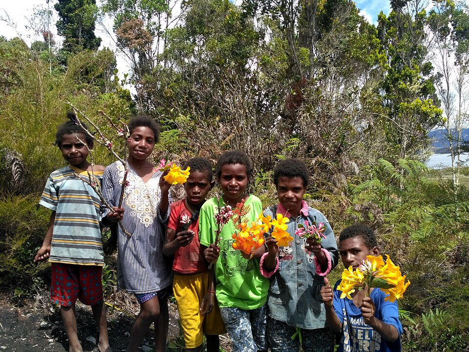
Papua
Titik mula pergerakan kami. Memfokuskan pada pembangunan sanitasi perintis dan penyediaan akses air di wilayah pedalaman.
Buka Peta Interaktif →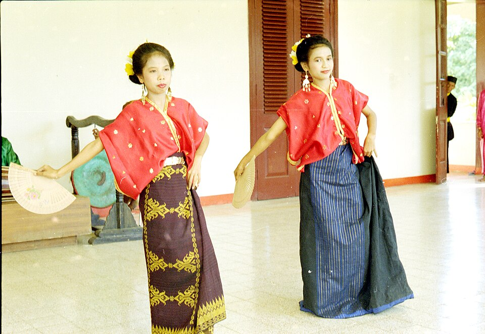
Nusa Tenggara Barat (NTB)
Intervensi difokuskan pada penanganan gizi spesifik, penyediaan air bersih di daerah krisis air, dan penguatan kelompok rentan.
Buka Peta Interaktif →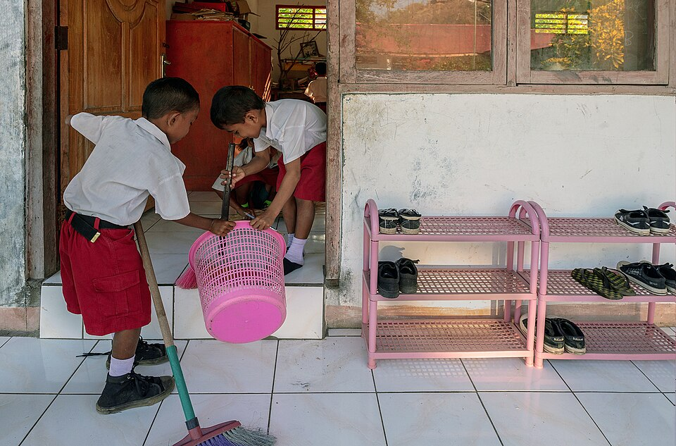
Nusa Tenggara Timur (NTT)
Mengatasi tingginya angka stunting melalui kolaborasi lintas sektor serta pemenuhan infrastruktur sanitasi komunal yang adaptif.
Buka Peta Interaktif →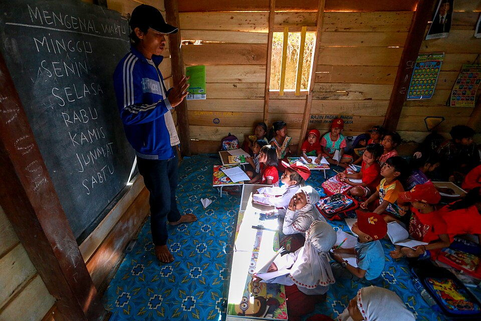
Sulawesi
Penguatan infrastruktur air bersih pesisir, penanganan stunting terpadu, dan pemberdayaan inklusif di wilayah Sulawesi Selatan dan sekitarnya.
Buka Peta Interaktif →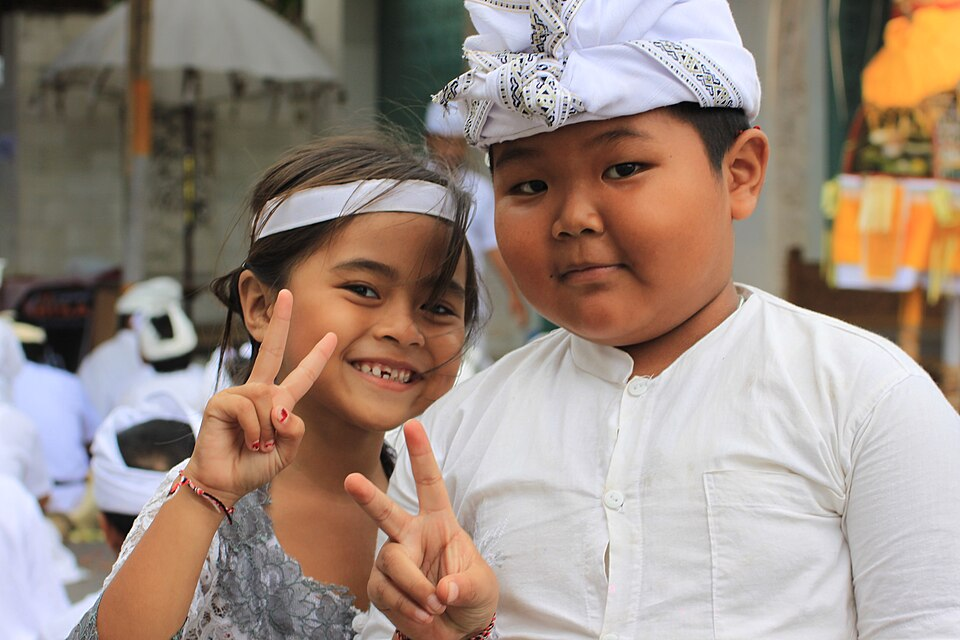
Bali
Fokus pada pemberdayaan disabilitas berbasis komunitas, sanitasi ramah lingkungan, serta dukungan ketahanan pangan bagi keluarga rentan.
Buka Peta Interaktif →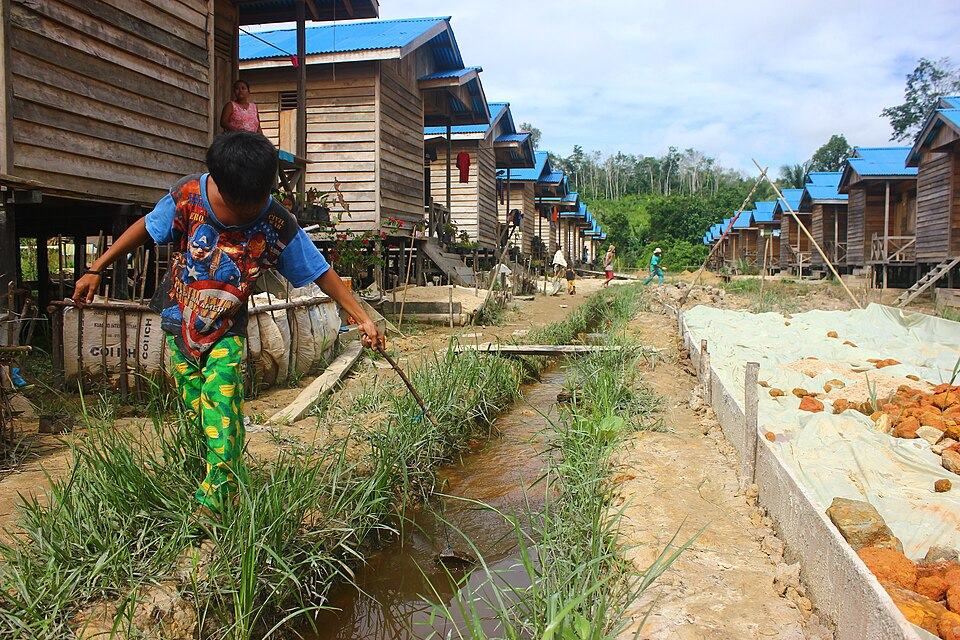
Maluku
Menjangkau pulau-pulau terpencil dengan penyediaan sistem filtrasi air bersih, penanganan stunting kepulauan, dan aksesibilitas dasar.
Buka Peta Interaktif →Galeri Kegiatan
Dokumentasi aksi nyata dan rekam jejak terkini @ummamudaindonesia dalam merajut asa di pelosok Indonesia.
Kemandirian Mulai Dari Rasa Percaya
Membangun kepercayaan keluarga dan masyarakat untuk mendukung kemandirian penyandang disabilitas.
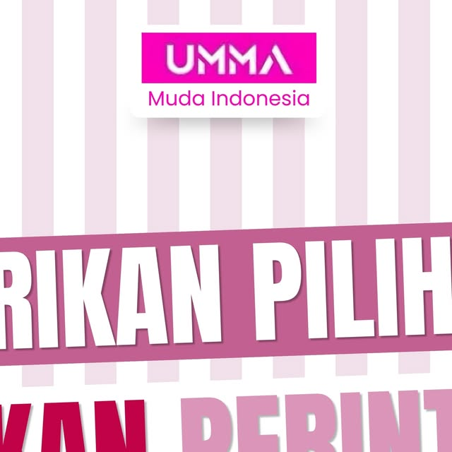
Berikan Pilihan, Bukan Perintah
Menghormati hak dan preferensi penyandang disabilitas dalam menentukan apa yang terbaik bagi mereka.
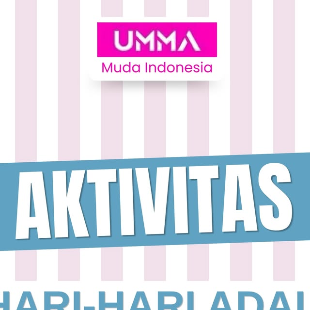
Aktivitas Harian Adalah Hak Semua Orang
Menghapus hambatan agar setiap individu bebas beraktivitas, berkumpul, dan menikmati ruang publik setara.
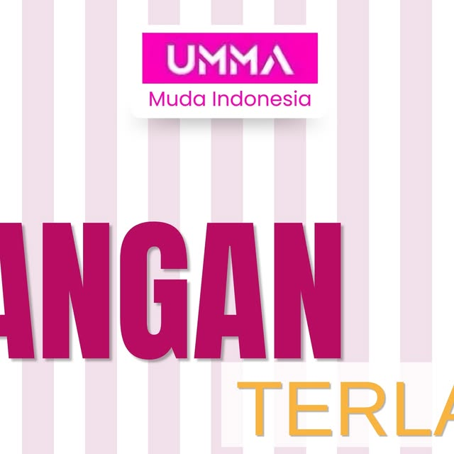
Dukungan Tumbuh Tanpa Membatasi
Memberikan ruang eksplorasi dan kebebasan belajar bagi penyandang disabilitas untuk membangun rasa percaya diri.
Kick-Off Inclusive Seed Fund (ISF) 2026
Langkah awal kolaborasi bersama Nathan's Foundation dalam mendanai inisiatif dampak sosial yang inklusif.
Sesi Kolaborasi & Pembelajaran Digital
Terhubung dan bertukar ide dari mana saja untuk memperkuat dampak positif bagi masyarakat luas.
Mitra & Pendukung
Kolaborasi strategis demi mewujudkan pembangunan inklusif dan berkelanjutan di Indonesia.
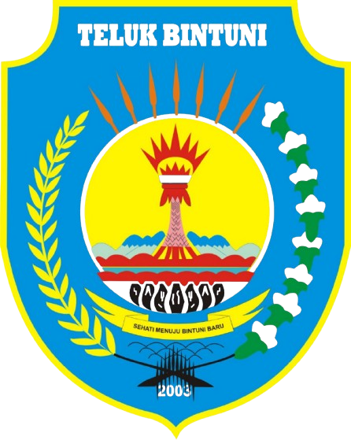